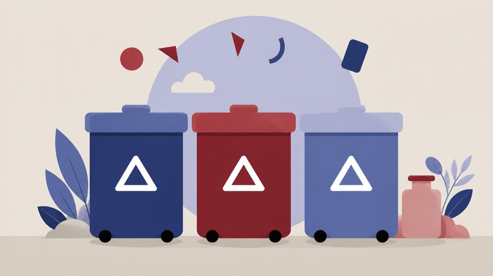

Besluttet 21. maj, Kommunalbestyrelsen, Lyngby-Taarbæk
Farve på affaldsbeholdere

Kort fortalt
- Hvem
- Kommunalbestyrelsen, Lyngby-Taarbæk Kommune
- Hvornår
- Torsdag 21. maj 2026
- Status
- Besluttet. Ad 1) Scenarie 2 godkendt. Ad 2) Godkendt.Beslutningen er forkortet her. Læs hele beslutningen
- Næste skridt
- Ved valg af scenarie 1 sker der ingen umiddelbare ændringer, udover at beholdere til haveaffald kommer til at indgå i haveaffaldsordningen fra 1. april 2028.
Er noget forkert her? Skriv til os
Læs hele sagen Kommunens egen tekst
Indstilling
Forvaltningen foreslår, at
1. der træffes beslutning om ét af følgende scenarier for beholdere ved villaer og rækkehuse:
Scenarie 1: Status quo med grønne beholdere, eller
Scenarie 2: Gradvis overgang til grå beholdere, eller
Scenarie 3: Hurtig overgang til grå beholdere
2. haveaffaldsbeholdere fra 1. april 2028 er en del af haveaffaldsordningen. Ved valg af
scenarie 3 benyttes overskydende grønne beholdere til haveaffald i en overgangsperiode
Problemstilling
Kommunalbestyrelsen besluttede på møde d. 3. september 2015, at plast, papir, glas og metal
skulle indsamles i 4-kammerbeholdere, og at disse skulle være grønne.
Der er ikke truffet politisk beslutning om farvevalg for øvrige affaldsbeholdere, herunder for
beholdere ved etageboliger og andre husstande med fælles affaldsopsamling, hvor beholderne
i dag er grå. Ved villaer og rækkehuse har standardfarven efter beslutningen i 2015 været
grøn, fx da sækkestativerne til restaffald i 2021 blev udskiftet med 2-kammerbeholdere til restog madaffald.
Lyngby-Taarbæk Forsyning påpeger, at brugen af beholdere i forskellige farver er
uhensigtsmæssigt, idet der er behov for større lagerkapacitet af beholdere og reservedele i
flere farver.
Generelt fremhæver Forsyningen en række fordele ved at benytte grå beholdere frem for
grønne.
Eksempelvis indeholder grønne beholdere en lavere andel genanvendt plast (60%) end grå
beholdere (80%), fordi en højere andel gør det sværere at ramme en ensartet grøn farve.
Producenterne oplyser desuden, at når beholderne er udtjente, kan en større andel af plasten i
de grå beholdere genanvendes, sammenlignet med de grønne beholdere.
Grå beholdere (antracitgrå, RAL 7021) er det mest almindelige farvevalg i kommunerne, idet
Forsyningen anslår, at 8 ud af 10 kommuner har grå beholdere. Det gælder fx Gentofte og
Rudersdal kommuner, mens Gladsaxe er i gang med en løbende udfasning af deres grønne
beholdere til fordel for grå. Grønne beholdere bruges i flere kommuner primært til haveaffald,
og i enkelte tilfælde til madaffald.
Dette betyder, at leveringstiden for grønne beholdere og reservedele er længere, da de ofte
kun produceres på bestilling. Det kan give udfordringer ved større udrulninger og
hasteudskiftninger, og kræver større lagerkapacitet.
Beholderne købes via fælles rammeaftaler, som indgås af Vestforbrænding efter udbud ca.
hvert andet år. Pt. er priserne på grønne beholdere 0-10% højere (afhængigt af det konkrete
produkt) sammenlignet med grå beholdere.
Løsninger
Lyngby-Taarbæk Forsyning har udarbejdet tre forskellige scenarier for et fremtidigt farvevalg.
Scenarierne indebærer kun ændringer for villaer og rækkehuse med egne beholdere.
I alle scenarier gælder, at de nuværende grønne 4-kammerbeholdere repareres med grønne
reservedele indtil de udskiftes med nye 2-kammerbeholdere i april 2028 (jævnfør
Kommunalbestyrelsens beslutning på møde d. 11. december 2025).
Ligeledes gælder det for alle scenarier, at Forsyningen ønsker at ensrette affaldsordningerne
således, at alle beholdere leveres og repareres efter behov uden særskilt omkostning for den
enkelte husstand. Dette gælder i dag for alle beholdere på nær haveaffaldsbeholderen, som
borgerne skal købe af Forsyningen.
Scenarie 1 - Status quo med grønne beholdere
I dette scenarie fastholdes de nuværende farvevalg, hvor villaer og rækkehuse som
udgangspunkt har grønne beholdere, mens etageboliger og andre husstande med fælles
beholdere har grå beholdere.
Som nævnt medfører dette på den ene side:
længere leveringstid på grønne beholdere og reservedele hertil
udfordringer ved hasteudskiftninger og større udrulninger af grønne beholdere
behov for større lagerkapacitet (både grønne og grå beholdere og reservedele)
en mindre mængde genanvendt plast i beholderne
På den anden side betyder det, at de nuværende beholdere repareres og benyttes i deres
fulde levetid, hvorved ressourcerne udnyttes fuldt ud.
Forsyningen forventer at skulle indkøbe en del nye haveaffaldsbeholdere som følge af, at disse
fremover er en del af ordningen. Dels er mange af de nuværende haveaffaldsbeholdere
nedslidte og trænger til udskiftning, og dels kan der være flere husstande end i dag, der ønsker
en beholder til haveaffald, når den kan fås som en del af ordningen.
Scenarie 2 - Gradvis overgang til grå beholdere
Farven grå vælges som standard for beholdere ved alle boligtyper og affaldsordninger.
I forbindelse med udskiftningen af alle 4-kammerbeholderne i april 2028 vil alle villaer og
rækkehuse få to nye grå 2-kammerbeholdere. Beholderne til mad- og restaffald og pap
udskiftes derimod kun gradvist til grå beholdere i takt med, at defekte og udtjente beholdere
udskiftes. Overgangsperioden forventes at være op til 10 år, dvs. at villaer og rækkehuse i en
årrække vil have både grå og grønne beholdere.
For haveaffaldsbeholdere gælder det samme som i Scenarie 1, dog overgås også her gradvist
til grå beholdere.
Scenarie 3 - Hurtig overgang til grå beholdere
Farven grå vælges som standard for beholdere ved alle boligtyper og affaldsordninger.
I dette scenarie sker en hurtig overgang, idet alle beholdere fra april 2028 vil være grå, med
undtagelse af beholdere til haveaffald, som i en overgangsperiode vil være grønne.
I forbindelse med udskiftningen af alle 4-kammerbeholderne i april 2028 vil også alle 2kammerbeholdere til mad- og restaffald samt beholdere til pap blive udskiftet med tilsvarende
grå beholdere. Dette kræver en større engangsinvestering i 2028.
Husstande, der i den mellemliggende periode bestiller en beholder til pap, eller skal have en ny
beholder til mad- og restaffald, vil ligeledes få denne leveret i grå.
De hjemtagne grønne beholdere gennemgås, og en stor andel forventes at kunne tilpasses til
brug for haveaffald i stedet for at blive kasseret. Disse beholdere vaskes og klargøres, og vil
herefter blive uddelt til de husstande, der ønsker en haveaffaldsaffaldsbeholder. Når der ikke
er flere grønne beholdere på lager, overgås til brug af nye, grå beholdere også til haveaffald.
I dette scenarie er der en større udgift i det første år, som dækker indkøb og udkørsel af nye
beholdere samt klargøring af genbrugte beholdere til brug for haveaffald.
Anbefaling
Forsyningen anbefaler en overgang til grå beholdere for at opnå drifts- og miljømæssige
fordele: Grå beholdere og reservedele er lagervarer med væsentligt kortere leveringstid,
indeholder en højere andel genanvendt plast og kan i højere grad genanvendes, når de er
udtjente. Samtidig reduceres behovet for dobbelt lagerføring af både grønne og grå beholdere,
hvilket forenkler driften og reducerer lagerbehovet.
På denne baggrund anbefaler Forsyningen som udgangspunkt scenarie 2, da dette giver den
mindste påvirkning af affaldsgebyrerne. Alternativt scenarie 3, hvor der sker en hurtigere
overgang til grå beholdere.
Forvaltningen bemærker hertil, at scenarie 2 vil medføre en længere årrække, hvor villaer og
rækkehuse vil have både grå og grønne beholdere. Det samme gælder i mindre grad i scenarie
3, hvor de hjemtagne grønne beholdere genbruges i en overgangsperiode til haveaffald ved de
boliger, som måtte ønske en beholder hertil.
Begge farver vurderes at være diskrete i forhold til at passe ind i omgivelserne, som ofte vil
være hække eller anden beplantning. Æstetisk vil ensfarvede beholdere være at foretrække,
ligesom dette må forventes at give mindst utilfredshed fra borgernes side.
Forsyningen har ikke undersøgt klimabelastningen ved scenarierne, og der er således ikke
foretaget en livscyklusanalyse eller lignende. Overordnet vurderer Forsyningen, at scenarie 1
giver den bedste ressourceudnyttelse på kort sigt, da eksisterende beholdere bruges i deres
fulde levetid, mens scenarie 2 og 3 har en bedre klimaprofil på længere sigt, da grå beholdere
indeholder en højere andel genanvendt plast (ca. 80 % mod ca. 60 %), kan genanvendes i
højere grad, når de er udtjente og kræver mindre ekstra produktion og lagerføring.
Strategisk ramme
Affaldsplan 2019-2030
Videre proces
Ved valg af scenarie 1 sker der ingen umiddelbare ændringer, udover at beholdere til
haveaffald kommer til at indgå i haveaffaldsordningen fra 1. april 2028.
Ved valg af scenarie 2 vil ændringen træde i kraft med det samme, dvs. at der ved
udskiftninger og bestillinger af nye beholdere leveres grå beholdere. Dog vil 4kammerbeholderen forblive som den er, indtil den udskiftes med nye grå 2-kammerbeholdere i
april 2028. Beholdere til haveaffald kommer til at indgå i haveaffaldsordningen fra 1. april 2028.
Ved valg af scenarie 3 vil ændringen træde i kraft med det samme, ligesom i scenarie 2, dog
hjemtages de resterende grønne beholdere i forbindelse med implementeringen af nye
ordninger i april 2028. De hjemtagne grønne beholdere (kun 240 liter) vil blive vasket og
istandsat, og herefter indgå i haveaffaldsordningen.
Økonomi
Udgifter på affaldsområdet dækkes af de affaldsgebyrer, der opkræves af husholdningerne i
kommunen.
Forsyningen har foretaget en beregning af de forventede ændringer i affaldsgebyrerne for de
tre scenarier. Beregningerne omfatter omkostninger til indkøb, bortskaffelse, klargøring og
udkørsel af nye beholdere samt fradrag for allerede afskrevne beholdere. Der er ikke indregnet
prisforskelle på henholdsvis grønne og grå beholdere og reservedele. Ligeledes har det
ikke været muligt at estimere omkostninger til lager, men behovet for lagerplads vil være
mindst i scenarie 2.
Nye beholdere afskrives over en periode på 7 år.
Kr. inkl.
moms
År
År År År År År År
Ændring
Gennemsnit
i alt
Scenarie
Scenarie
Scenarie
Tabel 1: Estimat for gebyrstigning i scenarie 1-3 (kroner pr. husstand) - alle priser er opgjort i
2026‑niveau. Afrundet til hele 10 kr.
I scenarie 1 og 2 dækker udgiften indkøb af nye beholdere til haveaffald, som afskrives over 7
år.
I scenarie 3 dækker udgiften i det første år indkøb og udkørsel af nye beholdere samt
klargøring af genbrugte beholdere til brug for haveaffald. I de efterfølgende år dækker udgiften
afskrivning af nye beholdere til mad- og restaffald samt pap.
Forsyningen bemærker, at der i beregningerne alene er medtaget omkostninger knyttet til
beholdere. Eventuelt øvrige omkostninger i affaldsordningerne indgår i de samlede takster,
men er ikke en del af beregningen. Dette kunne fx være øgede behandlingsudgifter i tilfælde
af, at den ændrede haveaffaldsordning medfører øgede mængder haveaffald indsamlet i
ordningen.
Beslutningskompetence
Teknik- og Miljøudvalget anbefaler.
Økonomiudvalget anbefaler.
Kommunalbestyrelsen beslutter.
Beslutningsforløb
Beslutning fra Teknik- og Miljøudvalget 2026-2029, den 5. maj 2026, punkt 8:
Ad 1) Scenarie 2 anbefalet.
Ad 2) Anbefalet.
Beslutning fra Økonomiudvalget 2026-2029, den 13. maj 2026, punkt 12:
Ad 1) Scenarie 2 anbefalet.
Ad 2) Anbefalet.
Beslutning
Ad 1) Scenarie 2 godkendt.
Ad 2) Godkendt
Inge Duus (F) var fraværende, i stedet deltog Silas Mudoh (F).
Mark Nathansen (B) var fraværende, i stedet deltog Susanne Hjernøe (B).
Kilde: Lyngby-Taarbæk Kommune, Kommunalbestyrelsen, referat fra mødet torsdag 21. maj 2026, punkt 9. Læs den originale sag hos kommunen.
Bydele i sagen: Taarbæk